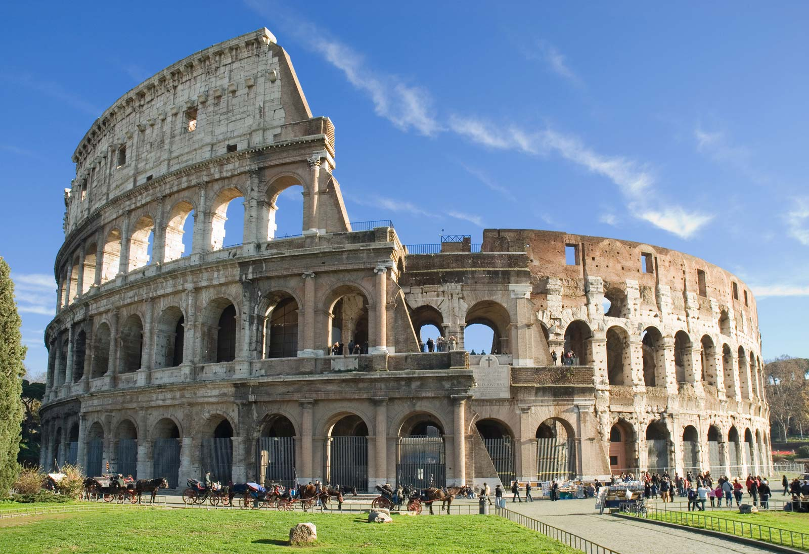
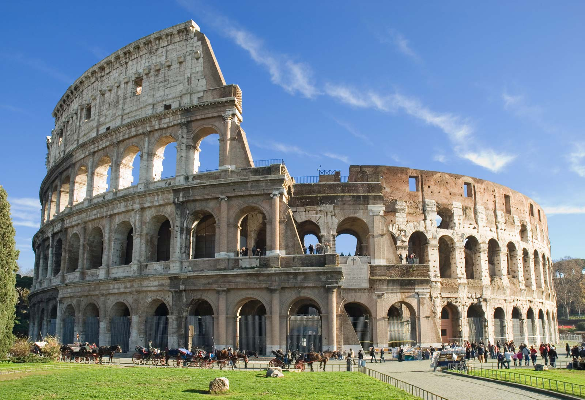

This article is about natural and constructed phenomenona and structures of the world.This website Various lists of the Wonders of the world
have been compiled from antiquity to the present day,to catalogue the world's most spectacular natural wonders and manmade structures.
The Seven Wonders of the World is the first known list of the most remarkable creations of the classical antiquity;it was based on guidebooks
popular among Hellenic sightseers and only includes works located around the Mediterranean rim and in Mesopotamia.The number seven was choosen because the Greeks believed
it represented perfection ad plenty,because it was the number of five planets knowm anciently,plus the sun and moon.
"SEVEN WONDERS OF THE WORLD"


 
